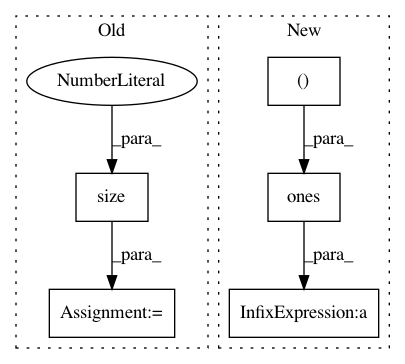

f93beff338925cc1bf1b3ff1b32a2c440a4c9427,tests/_tests_scripts/z_mvp_mnist_gan.py,CustomRunner,_handle_batch,#CustomRunner#Any#,18
Before Change
Docs.
images, _ = batch
images = images.view(images.size(0), -1)
bs = images.shape[0]
z = torch.randn(bs, 128).to(self.device)
generated_images = self.model["generator"](z)
// generator step
// predictions & labels
generated_labels = torch.ones(bs, 1).to(self.device)
generated_pred = self.model["discriminator"](generated_images)
// loss
loss_generator = F.binary_cross_entropy(
generated_pred, generated_labels
)
self.state.batch_metrics["loss_generator"] = loss_generator
// discriminator step
// real
After Change
// Assemble labels discriminating real from fake images
labels = torch.cat(
[torch.ones((batch_size, 1)), torch.zeros((batch_size, 1))]
).to(self.device)
// Add random noise to the labels - important trick!
labels += 0.05 * torch.rand(labels.shape).to(self.device)
// Train the discriminator
predictions = self.model["discriminator"](combined_images)
batch_metrics[
In pattern: SUPERPATTERN
Frequency: 3
Non-data size: 5
Instances
Project Name: Scitator/catalyst
Commit Name: f93beff338925cc1bf1b3ff1b32a2c440a4c9427
Time: 2020-04-21
Author: scitator@gmail.com
File Name: tests/_tests_scripts/z_mvp_mnist_gan.py
Class Name: CustomRunner
Method Name: _handle_batch
Project Name: rusty1s/pytorch_geometric
Commit Name: d8a075668b6e9cdf4c08f6c7285e5c7d2fbf5332
Time: 2017-10-17
Author: matthias.fey@tu-dortmund.de
File Name: torch_geometric/graph/geometry.py
Class Name:
Method Name: edges_from_faces